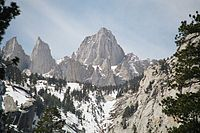
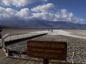
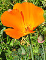
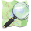

California
California (pronounced  i/kælɨˈfɔrnjə/) is a state located on the West Coast of the United States. It is by far the most populous U.S. state,[9] and the third-largest by land area (after Alaska and Texas). It is home to the nation's second- and sixth-largest census statistical areas (Los Angeles Metropolitan Area and San Francisco Bay Area), and eight of the nation's fifty most populated cities (Los Angeles, San Diego, San Jose, San Francisco, Fresno, Sacramento, Long Beach and Oakland).[10] The capital city is Sacramento.
i/kælɨˈfɔrnjə/) is a state located on the West Coast of the United States. It is by far the most populous U.S. state,[9] and the third-largest by land area (after Alaska and Texas). It is home to the nation's second- and sixth-largest census statistical areas (Los Angeles Metropolitan Area and San Francisco Bay Area), and eight of the nation's fifty most populated cities (Los Angeles, San Diego, San Jose, San Francisco, Fresno, Sacramento, Long Beach and Oakland).[10] The capital city is Sacramento.
California's diverse geography ranges from the Pacific Coast in the west, to the Sierra Nevada mountains in the east—from the Redwood–Douglas-fir forests of the northwest, to the Mojave Desert areas in the southeast. The center of the state is dominated by Central Valley, a major agricultural area. California contains both the highest and lowest points in the contiguous United States (Mount Whitney and Death Valley), and has the third-longest coastline of all states (after Alaska and Florida). Earthquakes are a common occurrence due to the state's location along the Pacific Ring of Fire: about 37,000 are recorded annually.[11]
The name California once referred to a large area of North America claimed by Spain that included much of modern-day Southwestern United States and the Baja California peninsula. Beginning in the late 18th century, the area known as Alta California, comprising the California territory north of the Baja Peninsula, was colonized by the Spanish Empire as part of New Spain. In 1821, Alta California became a part of Mexico following its successful war for independence. Shortly after the beginning of the Mexican-American War in 1846, a group of American settlers in Sonoma declared an independent California Republic in Alta California. Though its existence was short-lived, its flag became the precursor for California's current state flag. American victory in the war led to the Treaty of Guadalupe Hidalgo, in which Mexico ceded Alta California to the United States. Western areas of Alta California became the state of California, which was admitted as the 31st state on September 9, 1850.
The California Gold Rush beginning in 1848 led to dramatic social and demographic change, with large scale immigration from the U.S. and abroad and an accompanying economic boom. Key developments in the early 20th century included the emergence of Los Angeles as the center of the American entertainment industry, and the growth of a large, state-wide tourism sector. The late 20th century saw the development of the technology and information sectors, punctuated by the growth of Silicon Valley. In addition to California's prosperous agricultural industry, other important contributors to its economy include aerospace, education, and manufacturing. If California were a country, it would be the eighth-largest economy in the world[12] and the 35th most populous nation. At least half of the fresh fruit produced in the United States are cultivated in California, and it also leads in the production of vegetables.[13]
Etymology
The word California originally referred to the entire region composed of the Baja California penninsula of Mexico, the current U.S. states of California, Nevada, and Utah, and parts of Arizona, New Mexico, and Wyoming.
The name California is most commonly believed to have derived from a fictional paradise peopled by Black Amazons and ruled by Queen Calafia.[14][15] The story of Calafia is recorded in a 1510 work The Exploits of Esplandian, written as a sequel to Amadis de Gaula by Spanish adventure writer Garci Rodríguez de Montalvo.[16][17][18] The kingdom of Queen Calafia, according to Montalvo, was said to be a remote land inhabited by griffins and other strange beasts, and rich in gold.
-
Know ye that at the right hand of the Indies there is an island called California, very close to that part of the Terrestrial Paradise, which was inhabited by black women without a single man among them, and they lived in the manner of Amazons. They were robust of body with strong passionate hearts and great virtue. The island itself is one of the wildest in the world on account of the bold and craggy rocks.[19]
The name California is the fifth-oldest surviving European place-name in the U.S. and was applied to what is now the southern tip of Baja California peninsula as the island of California by a Spanish expedition led by Diego de Becerra and Fortún Ximénez, who landed there in 1533 at the behest of Hernán Cortés.[note 1]
Geography

California adjoins the Pacific Ocean to the west, Oregon to the north, Nevada and Arizona to the east, and the Mexican state of Baja California to the south. With an area of 160,000 square miles (414,000 km2), it is the third-largest state in the United States in size, after Alaska and Texas.[21] If it were a country, California would be the 59th-largest in the world in area.
In the middle of the state lies the California Central Valley, bounded by the coastal mountain ranges in the west, the Sierra Nevada to the east, the Cascade Range in the north and the Tehachapi Mountains in the south. The Central Valley is California's agricultural heartland and grows approximately one-third of the nation's food.[22][23]
Divided in two by the Sacramento-San Joaquin River Delta, the northern portion, the Sacramento Valley serves as the watershed of the Sacramento River, while the southern portion, the San Joaquin Valley is the watershed for the San Joaquin River; both areas derive their names from the rivers that transit them. With dredging, the Sacramento and the San Joaquin Rivers have remained sufficiently deep that several inland cities are seaports.
The Sacramento-San Joaquin River Delta serves as a critical water supply hub for the state. Water is routed through an extensive network of canals and pumps out of the delta, that traverse nearly the length of the state, including the Central Valley Project and the State Water Project. Water from the Delta provides drinking water for nearly 23 million people, almost two-thirds of the state's population, and provides water to farmers on the west side of the San Joaquin Valley. The Channel Islands are located off the southern coast.
The Sierra Nevada (Spanish for "snowy range") includes the highest peak in the contiguous forty-eight states, Mount Whitney, at 14,505 ft (4421 m).[3][4][5] The range embraces Yosemite Valley, famous for its glacially carved domes, and Sequoia National Park, home to the giant sequoia trees, the largest living organisms on Earth, and the deep freshwater lake, Lake Tahoe, the largest lake in the state by volume.
To the east of the Sierra Nevada are Owens Valley and Mono Lake, an essential migratory bird habitat. In the western part of the state is Clear Lake, the largest freshwater lake by area entirely in California. Though Lake Tahoe is larger, it is divided by the California/Nevada border. The Sierra Nevada falls to Arctic temperatures in winter and has several dozen small glaciers, including Palisade Glacier, the southernmost glacier in the United States.
About 45 percent of the state's total surface area is covered by forests,[24] and California's diversity of pine species is unmatched by any other state. California contains more forestland than any other state except Alaska. Many of the trees in the California White Mountains are the oldest in the world; one Bristlecone pine has an age of 4,700 years.
In the south is a large inland salt lake, the Salton Sea. The south-central desert is called the Mojave; to the northeast of the Mojave lies Death Valley, which contains the lowest and hottest place in North America, the Badwater Basin at −282 feet (−86.0 m).[7] The horizontal distance from the nadir of Death Valley to the summit of Mount Whitney is less than 90 miles (140 km). Indeed, almost all of southeastern California is arid, hot desert, with routine extreme high temperatures during the summer. The southeastern border of California with Arizona is entirely formed by the Colorado River, from which the southern part of the state gets about half of its water.
Along the California coast are several major metropolitan areas, including Greater Los Angeles Area, the San Francisco Bay Area, and the San Diego metropolitan area.
As part of the Ring of Fire, California is subject to tsunamis, floods, droughts, Santa Ana winds, wildfires, landslides on steep terrain, and has several volcanoes. It sees numerous earthquakes due to several faults, in particular the San Andreas Fault.
Climate

California's climate varies from Mediterranean to subarctic.
Much of the state has a Mediterranean climate, with cool, rainy winters and dry summers. The cool California Current offshore often creates summer fog near the coast. Further inland, one encounters colder winters and hotter summers.
Northern parts of the state average higher annual rainfall than the south. California's mountain ranges influence the climate as well: some of the rainiest parts of the state are west-facing mountain slopes. Northwestern California has a temperate climate, and the Central Valley has a Mediterranean climate but with greater temperature extremes than the coast. The high mountains, including the Sierra Nevada, have a mountain climate with snow in winter and mild to moderate heat in summer.
The east side of California's mountains produce a rain shadow, creating expansive deserts. The higher elevation deserts of eastern California see hot summers and cold winters, while the low deserts east of the southern California mountains experience hot summers and nearly frostless mild winters. Death Valley, a desert with large expanses below sea level, is considered the hottest location in North America; the highest temperature in the Western Hemisphere, 134 °F (57 °C), was recorded there on July 10, 1913.
Ecology
California is one of the richest and most diverse parts of the world, and includes some of the most endangered ecological communities. California is part of the Nearctic ecozone and spans a number of terrestrial ecoregions.[25]
California's large number of endemic species includes relict species, which have died out elsewhere, such as the Catalina Ironwood (Lyonothamnus floribundus). Many other endemics originated through differentiation or adaptive radiation, whereby multiple species develop from a common ancestor to take advantage of diverse ecological conditions such as the California lilac (Ceanothus). Many California endemics have become endangered, as urbanization, logging, overgrazing, and the introduction of exotic species have encroached on their habitat.
Flora and fauna

California boasts several superlatives in its collection of flora: the largest trees, the tallest trees, and the oldest trees. California's native grasses are perennial plants.[26] After European contact, these were generally replaced by invasive species of European annual grasses; and, in modern times, California's hills turn a characteristic golden-brown in summer.[27]
Because California has the greatest diversity of climate and terrain, the state has six life zones which are the lower Sonoran (desert); upper Sonoran (foothill regions and some coastal lands), transition (coastal areas and moist northeastern counties); and the Canadian, Hudsonian, and Arctic Zones, comprising the state's highest elevations.[28]
Plant life in the dry climate of the lower Sonoran zone contains a diversity of native cactus, mesquite, and paloverde. The Joshua tree (Yucca brevifolia) is found in the Mojave Desert. Flowering plants include the dwarf desert poppy and a variety of asters. Fremont cottonwood and valley oak thrive in the Central Valley. The upper Sonoran zone includes the chaparral belt, characterized by forests of small shrubs, stunted trees, and herbaceous plants. Nemophila, mint, phacelia, viola, and the California poppy (Eschscholtzia californica)- the state flower- also flourish in this zone, along with the lupine, more species of which occur here than anywhere else in the world.[28]
The transition zone includes most of California's forests with the redwood (Sequoia sempervirens) and the "big tree" or giant sequoia (Sequoia gigantea), among the oldest living things on earth (some are said to have lived at least 4,000 years). Tanbark oak, California laurel, Sugar Pine, madrona, broad-leaved maple, and Douglas-fir also grow here. Forest floors are covered with swordfern, alumnroot, barrenwort, and trillium, and there are tickets of huckleberry, azalea, elder, and wild currant. Characteristic wild flowers include varieties of mariposa, tulip, and tiger and leopard lilies.[29]
The high elevations of the Canadian zone allow the Jeffrey Pine, red fir, and Lodgepole Pine to thrive. Brushy areas are abundant with dwarf manzanita and ceanothus; the unique Sierra puffball is also found here. Right below the timeberline, in the Hudsonian zone, the whitebark, foxtail, and silver pines grow. At about 10,500 ft (3,200 m), begins the Arctic zone, a treeless region whose flora include a number of wildflowers, including Sierra primrose, yellow columbine, alpine buttercup, and alpine shooting star.[28][30]
Common plants that have been introduced to the state include the eucalyptus, acacia, pepper tree, geranium, and Scotch broom. The species that are federally classified as endangered are the Contra Costa wallflower, Antioch Dunes evening primrose, Solano Grass, San Clemente Island larkspur, salt marsh bird's beak, McDonald's rock-cress, and Santa Barbara Island Liveforever. As of December 1997[update], 85 plant species were listed as threatened or endangered.[28]
In the deserts of the lower Sonoran zone, the mammals include the jackrabbit, kangaroo rat, squirrel, and opossum. Common birds include the owl, roadrunner, Cactus Wren, and various species of hawk. The area's reptilian life include the sidewinder viper, desert tortoise, and horned toad. The upper Sonoran zone boasts mammals such as the antelope, brown-footed woodrat, and Ring-tailed Cat. Birds unique to this zone are the California thrasher, bush tit, and California Condor.[28][31][32][33]
In the transition zone, there are Colombian Black-tailed Deer, black bears, gray foxes, cougars, bobcats, and Roosevelt elk. Reptiles such as the garter snakes and rattlesnakes inhabit the zone. In addition, amphibians such as the water puppy and redwood salamander are common too. Birds such as the kingfisher, chickadee, towhee, and hummingbird thrive here as well.[28][34]
The Canadian zone mammals include the Mountain Weasel, Snowshoe Hare, Sierra chickadee, and several species of chipmunks. Conspicuous birds include the blue-fronted jay, Sierra hermit thrush, water ouzel, and Townsend solitaire. As one ascends into the Hudsonian zone, birds become scarcer. While the Sierra rosy finch is the only bird native to the high Arctic region, other bird species such as the hummingbird and Clark's Nutcracker. Principal mammals found in this region include the Sierra coney, White-tailed Jackrabbit, and the Bighorn Sheep. As of April 2003[update], the Bighorn Sheep was listed as endangered by the US Fish and Wildlife Service. The fauna found throughout several zones are the mule deer, coyote, mountain lion, Northern Flicker, and several species of hawk and sparrow.[28]
Aquatic life in California thrives, from the state's mountain lakes and streams to the rocky Pacific coastline. Numerous trout species are found, among them rainbow, golden, and Tahoe. Migratory species of salmon are common as well. Deep-sea life forms include sea bass, yellowfin tuna, barracuda, and several types of whale. Native to the cliffs of northern California are seals, sea lions, and many types of shorebirds, including migratory species.[28]
As of April 2003, 118 California animals were on the federal endangered list; 181 plants were listed as endangered or threatened. Endangered animals include the San Joaquin kitfox, Point Arena mountain beaver, Pacific pocket mouse, Salt Marsh Harvest Mouse, Morro Bay kangaroo rat (and five other species of kangaroo rat), Amargosa vole, California Least Tern, California Condor, Loggerhead Shrike, San Clemente sage sparrow, San Francisco garter snake, five species of salamander, three species of chub, and two species of pupfish. Eleven butterflies are also endangered and two that are threatened are on the federal list. Among threatened animals are the coastal California Gnatcatcher, Paiute cutthroat trout, southern sea otter, and Northern Spotted Owl. California has a total of 290,821 acres (1,176.91 km2) of National Wildlife Refuges.[28] As of September 2010[update], 123 California animals were listed as either endangered or threatened on the federal list provided by the US Fish & Wildlife Service.[35] Also, as of the same year[update], 178 species of California plants were listed either as endangered or threatened on this federal list.[35]
Rivers
The state's coasts, rivers, and other bodies of water are looked after by the California Coastal Commission.
The two most prominent rivers within California are the Sacramento River and the San Joaquin River, which drain the Central Valley and the west slope of the Sierra Nevada and flow to the Pacific Ocean through San Francisco Bay. Several major tributaries feed into the Sacramento and the San Joaquin, including the Pit River, the Tuolumne River, and the Feather River.
The Owens River takes runoff from the southeastern slopes of the Sierra Nevada and flows into Owens Lake. The Eel River and Salinas River each drain portions of the California coast, north and south of San Francisco Bay, respectively. The Mojave River is the primary watercourse in the Mojave Desert, and the Santa Ana River drains much of the Transverse Ranges as it bisects Southern California.
Some other important rivers are the Klamath River and the Trinity River in the far north coast, and the Colorado River on the southeast border with Arizona.
Regions
|  |  | |
|
Mount Whitney (l), the highest point in the Contiguous U.S., is less than 90 miles (140 km) away from Badwater Basin in Death Valley (r), the lowest point in North America
|
||
|
|
History
| History of California | |
|---|---|
|  This article is part of a series |
|
| Timeline | |
| To 1899 | |
| Gold Rush (1848) | |
| US Civil War (1861-1865) | |
| Since 1900 | |
| Topics | |
| Maritime · Railroad · | |
| Highways · Slavery | |
| Cities | |
| Los Angeles · San Franicsco · | |
| San Diego · San Jose · | |
| Sacramento | |
|
California Portal |
Settled by successive waves of arrivals during the last 10,000 years, California was one of the most culturally and linguistically diverse areas in pre-Columbian North America; The Indigenous peoples of California included more than 70 distinct groups of Native Americans. Large, settled populations lived on the coast and hunted sea mammals, fished for salmon and gathered shellfish; groups in the interior hunted terrestrial game, and gathered nuts, acorns and berries. California groups also were diverse in their political organization with bands, tribes, villages, and on the resource-rich coasts, large chiefdoms, such as the Chumash, Pomo and Salinan. Trade, intermarriage and military alliances fostered many social and economic relationships among the diverse groups.
The first European to explore the coast as far north as the Russian River was the Portuguese Juan Rodríguez Cabrillo, in 1542, sailing for the Spanish Empire. Some 37 years later English explorer Francis Drake also explored and claimed an undefined portion of the California coast in 1579. Spanish traders made unintended visits with the Manila Galleons on their return trips from the Philippines beginning in 1565.[36]Sebastián Vizcaíno explored and mapped the coast of California in 1602 for New Spain.
Spanish missionaries began setting up 21 California Missions along the coast of what became known as Alta California (Upper California), together with small towns and presidios. In 1821 the Mexican War of Independence gave Mexico (including California) independence from Spain; for the next 25 years, Alta California remained a remote northern province of the nation of Mexico. Cattle ranches, or ranchos, emerged as the dominant institutions of Mexican California. After Mexican independence from Spain, the chain of missions became the property of the Mexican government and were secularized by 1832. The ranchos developed under ownership by Californios (Spanish-speaking Californians) who had received land grants, and traded cowhides and tallow with Boston merchants.
Beginning in the 1820s, trappers and settlers from the U.S. and Canada began to arrive in Northern California, harbingers of the great changes that would later sweep the Mexican territory. These new arrivals used the Siskiyou Trail, California Trail, Oregon Trail and Old Spanish Trail to cross the rugged mountains and harsh deserts surrounding California. In this period, Imperial Russia explored the California coast and established a trading post at Fort Ross.
In 1846 settlers rebelled against Mexican rule during the Bear Flag Revolt. Afterwards, rebels raised the Bear Flag (featuring a bear, a star, a red stripe and the words "California Republic") at Sonoma.
“[We] overthrow a Government which has seized upon the property of the Missions for its individual aggrandizement; which has ruined and shamefully oppressed the laboring people of California.”—William Ide, Declaration from the Bear Flag Revolt
The Republic's first and only president was William B. Ide,[37] who played a pivotal role during the Bear Flag Revolt. His term lasted 22 days and concluded when California was occupied by U.S. forces during the Mexican-American War.
The California Republic was short lived. The same year marked the outbreak of the Mexican-American War (1846–1848). When Commodore John D. Sloat of the United States Navy sailed into Monterey Bay and began the military occupation of California by the United States, Northern California capitulated in less than a month to the U.S. forces. After a series of defensive battles in Southern California, including The Siege of Los Angeles, the Battle of Dominguez Rancho, the Battle of San Pasqual, the Battle of Rio San Gabriel and the Battle of La Mesa, the Treaty of Cahuenga was signed by the Californios on January 13, 1847, securing American control in California. Following the Treaty of Guadalupe Hidalgo that ended the war, the region was divided between Mexico and the U.S.; the western territory of Alta California, was to become the U.S. state of California, and Arizona, Nevada, Colorado and Utah became U.S. Territories, while the lower region of California, the Baja Peninsula, remained in the possession of Mexico.
In 1848 the non-native population of California was estimated to be no more than 15,000. But after gold was discovered, the population burgeoned with U.S. citizens, Europeans and other immigrants during the great California Gold Rush. By 1854 over 300,000 settlers had come.[38] On September 9, 1850, as part of the Compromise of 1850, California was admitted to the United States undivided as a free state, denying the expansion of slavery to the Pacific Coast.
In 1849 doctor of medicine and soldier Felix Wierzbicki published in San Francisco the first English-language book printed in California[39] "California as it is and As It May Be".[40][41][42] Book is an "unvarnished" description of the culture, peoples, and climate of the area in 1849. Wierzbicki described prospective settlers that includes a survey of agriculture and hints on gold mining.[43]
The seat of government for California under Spanish and later Mexican rule was located at Monterey from 1777 until 1835, when Mexican authorities abandoned[dubious ] California, leaving their missions and military forts behind.[44] In 1849 the Constitutional Convention was first held there. Among the duties was the task of determining the location for the new state capital. The first legislative sessions were held in San Jose (1850–1851). Subsequent locations included Vallejo (1852–1853), and nearby Benicia (1853–1854); these locations eventually proved to be inadequate as well. The capital has been located in Sacramento since 1854[45] with only a short break in 1861 when legislative sessions were held in San Francisco due to flooding in Sacramento.
Travel between California and the central and eastern parts of the U.S. was time consuming and dangerous. A more direct connection came in 1869 with the completion of the First Transcontinental Railroad through Donner Pass in the Sierra Nevada mountains. After this rail link was established, hundreds of thousands of U.S. citizens came west, where new Californians were discovering that land in the state, if irrigated during the dry summer months, was extremely well suited to fruit cultivation and agriculture in general. Vast expanses of wheat, other cereal crops, vegetable crops, cotton, and nut and fruit trees were grown (including oranges in Southern California), and the foundation was laid for the state's prodigious agricultural production in the Central Valley and elsewhere.
Migration to California accelerated during the early-20th century with the completion of major transcontinental highways like the Lincoln Highway and Route 66. In the period from 1900 to 1965, the population grew from fewer than one million to become the most populous state in the Union. In order to meet the population's needs, major engineering feats like the California and Los Angeles Aqueducts; the Oroville and Shasta Dams; and the Bay and Golden Gate Bridges were built across the state. The state government also adopted the California Master Plan for Higher Education in 1960 to develop a highly efficient system of public education.
Meanwhile, attracted to the mild Mediterranean climate, cheap land, and the state's wide variety of geography, filmmakers established the studio system in Hollywood in the 1920s. A couple of decades later, Stanford University and its Dean of Engineering Frederick Terman began encouraging faculty and graduates to stay in California instead of leaving the state, and develop a high-tech region in the area now known as Silicon Valley.[46] As a result of these efforts, California is currently regarded as a world center of the entertainment and music industries, of technology and engineering businesses, and as the U.S. center of agricultural production.
Demographics

Population
| Historical populations | |||
|---|---|---|---|
| Census | Pop. | %± | |
| 1850 | 92,597 |
|
|
| 1860 | 379,994 | 310.4% | |
| 1870 | 560,247 | 47.4% | |
| 1880 | 864,694 | 54.3% | |
| 1890 | 1,213,398 | 40.3% | |
| 1900 | 1,485,053 | 22.4% | |
| 1910 | 2,377,549 | 60.1% | |
| 1920 | 3,426,861 | 44.1% | |
| 1930 | 5,677,251 | 65.7% | |
| 1940 | 6,907,387 | 21.7% | |
| 1950 | 10,586,223 | 53.3% | |
| 1960 | 15,717,204 | 48.5% | |
| 1970 | 19,953,134 | 27.0% | |
| 1980 | 23,667,902 | 18.6% | |
| 1990 | 29,760,021 | 25.7% | |
| 2000 | 33,871,648 | 13.8% | |
| 2010 | 37,253,956 | 10.0% | |
| Sources: 1910–2010[47] | |||
California's population was counted by the US Census Bureau at 37,253,956 for the 2010 census, making it the most populous state.[47] Between 2000 and 2009, there was a natural increase of 3,090,016 (5,058,440 births minus 2,179,958 deaths).[48] During this time period, international migration produced a net increase of 1,816,633 people while domestic migration produced a net decrease of 1,509,708, resulting in a net in-migration of 306,925 people.[48] The State of California's own statistics show a population of 38,292,687 for January 1, 2009.[10]
California is the second-most-populous sub-national entity in the Western Hemisphere and the Americas, with a population second to that of State of São Paulo, Brazil.[49] California's population is greater than that of all but 34 countries of the world.[50][51] Also, Los Angeles County has held the title of most populous U.S. county for decades, and it alone is more populous than 42 U.S. states.[52][53] In addition, California is home to eight of the 50 most populous cities in the United States: Los Angeles (2nd), San Diego (8th), San Jose (10th), San Francisco (13th), Fresno (34th), Sacramento (35th), Long Beach (36th), and Oakland (47th). The center of population of California is located in the town of Buttonwillow, Kern County.[note 2]
In 2010, illegal aliens constituted an estimated 7.3 percent of the population, the third highest percentage of any state in the country,[55][56] totaling nearly 2.6 million.[57] More than half originate from Mexico.[57]
Starting in the year 2010, for the first time since the California Gold Rush, California-born residents make up the majority of the state's population.[58]
Racial and ancestral makeup
|
|
This section's factual accuracy may be compromised due to out-of-date information. Please help improve the article by updating it. There may be additional information on the talk page. (October 2011) |
Whereas according to the 2010 U.S. Census Bureau:
- 57.6% White (40.1% Non-Hispanic White)
- 13.0% Asian (3.2% Chinese, 3.2% Filipino, 1.6% Vietnamese, 1.4% Indian, 1.2% Korean, 0.7% Japanese, 0.2% Hmong, 0.2% Cambodian, 0.2% Laotian, 0.1% Thai, 0.1% Pakistani)
- 6.2% Black or African American
- 1.0% Native American
- 4.9% Multiracial (1.3% White and "Some Other Race", 1.2% White and Asian, 0.6% White and Native American, 0.5% White and Black, 1.3% Other)
- 0.4% Native Hawaiian or Pacific Islander (0.1% Samoan, 0.1% Guamanian or Chamorro, 0.1% Native Hawaiian, 0.2% "Other Pacific Islander")
- 37.6% are Hispanic or Latino (of any race) (30.7% Mexican, 1.5% Salvadoran, 0.9% Guatemalan, 0.5% Puerto Rican, 0.3% Nicaraguan, 0.2% Honduran, 0.2% Cuban, 0.2% Colombian, 0.2% Peruvian)
The principal ancestries of California's residents in 2009 has been surveyed to be the following:[59]
With regard to demographics, California has the largest population of White Americans in the U.S., an estimated 22,189,514 residents, although most demographic surveys do not measure actual genetic ancestry. The state has the fifth-largest population of African Americans in the U.S., an estimated 2,250,630 residents. California's Asian American population is estimated at 4.4 million, approximately one-third of the nation's 13.1 million Asian Americans. California's Native American population of 285,162 is the most of any state.[60]
According to estimates from 2008, California has the largest minority population in the United States by numbers, making up 57% of the state population.[61] In 2000, Hispanics comprised 32% of the population; that number grew to 37% in 2008.[62]Non-Hispanic whites decreased from 80% of the state's population in 1970 to 42% in 2008.[61][63]
Approximately 27% of California's public school students in the 2009–10 school year identified themselves as white, and almost 50.4% of the state's students identified themselves as Hispanic or Latino.[64] While the population of minorities accounts for 102 million of 301 million U.S. residents, 20% of the national total live in California.[60][65]
Languages
As of 2005, 57.6% of California residents age five and older spoke English as a first language at home, while 28.2% spoke Spanish. In addition to English and Spanish, 2.0% spoke Filipino, 1.6% spoke Chinese (which included Cantonese [0.6%] and Mandarin [0.4%]), 1.4% spoke Vietnamese, and 1.1% spoke Korean as their mother tongue. In total, 42.4% of the population spoke languages other than English.[66][67] California was historically one of the most linguistically diverse areas in the world, and is home to more than 70 indigenous languages derived from 64 root languages in 6 language families.[68][69] About half of the indigenous languages are no longer spoken, and all of California's living indigenous languages are endangered. There are some efforts toward language revitalization, such as for the Karuk language.
The official language of California has been English since the passage of Proposition 63 in 1986.[70] However, many state, city, and local government agencies still continue to print official public documents in numerous languages.[71] For example, the California Department of Motor Vehicles offers the written exam for the standard C Class driver's license in 31 languages along with English, and the audio exam in 11 languages.[72]
Culture
The culture of California is a Western culture and most clearly has its modern roots in the culture of the United States, but also, historically, many Hispanic influences. As a border and coastal state, Californian culture has been greatly influenced by several large immigrant populations, especially those from Latin America.[73]
California has long been a subject of interest in the public mind and has often been promoted by its boosters as a kind of paradise. In the early 20th Century, fueled by the efforts of state and local boosters, many Americans saw the Golden State as an ideal resort destination, sunny and dry all year round with easy access to the ocean and mountains. In the 1960s, popular music groups such as The Beach Boys promoted the image of Californians as laid-back, tanned beach-goers.
In terms of socio-cultural mores and national politics, Californians are perceived as more liberal than other Americans, especially those who live in the inland states. In some ways, California is the quintessential Blue State-- accepting of alternative lifestyles, not uniformly religious, and preoccupied with environmental issues.
The gold rush of the 1850s is still seen as a symbol of California's economic style, which tends to generate technology, social, entertainment, and economic fads and booms and related busts.
Religion
The largest religious denominations by number of adherents as a percentage of California's population in 2008 were the Catholic Church with 31 percent; Evangelical Protestants with 18 percent; and Mainline Protestants with 14 percent. Those unaffiliated with any religion represented 21 percent of the population.[74] The American Jewish Yearbook placed the total Jewish population of California at about 1,194,190 in 2006.[75]
The first priests to come to California were Roman Catholic missionaries from Spain. Roman Catholics founded 21 missions along the California coast, as well as the cities of Los Angeles and San Francisco. California continues to have a large Roman Catholic population due to the large numbers of Mexicans and Central Americans living within its borders. California has twelve dioceses and two archdioceses, the Archdiocese of Los Angeles and the Archdiocese of San Francisco, the former being the largest archdiocese in the United States.
A Pew Research Center survey revealed that California is somewhat less religious than the rest of the US: 62 percent of Californians say they are "absolutely certain" of the belief in God, while in the nation 71 percent say so. The survey also revealed 48 percent of Californians say religion is "very important," compared to 56 percent nationally.[76]
Armed forces
In California, as of 2002[update], the US Department of Defense had[77][unreliable source?]
- 123,948 active-duty military personnel
- 7,932 US Army personnel
- 96,047 US Navy (including 20,000+US Marines)
- 19,969 Air Force
- 58,076 DOD civilian personnel
In California, as of 2000[update] there were 2,569,340 veterans of US military service: 504,010 served in World War II, 301,034 in the Korean War, 754,682 during the Vietnam War, and 278,003 during 1990–2000 (including the Persian Gulf War).[77]
California's military forces consist of the Army and Air National Guard, the naval and state military reserve (militia), and the California Cadet Corps.
Economy
As of 2010, the gross state product (GSP) is about $1.9 trillion, the largest in the United States.[80] California is responsible for 13 percent of the United States' gross domestic product (GDP). As of 2006, California's GDP is larger than all but eight countries in the world (all but eleven countries by Purchasing Power Parity).
In terms of jobs, the five largest sectors in California are trade, transportation, and utilities; government; professional and business services; education and health services; and leisure and hospitality. In terms of output, the five largest sectors are financial services, followed by trade, transportation, and utilities; education and health services; government; and manufacturing.[81]
California currently has the 5th highest unemployment rate in the nation at 12.5% as of January 2010[update] and had continued to rise, up significantly from 5.9% in 2007.[82][83]
California's economy is very dependent on trade and international related commerce accounts for approximately one-quarter of the state’s economy. In 2008, California exported $144 billion worth of goods, up from $134 billion in 2007 and $127 billion in 2006.[84] Computers and electronic products are California's top export, accounting for 42 percent of all the state's exports in 2008.[84]
Agriculture is an important sector in California's economy. Farming-related sales more than quadrupled over the past three decades, from $7.3 billion in 1974 to nearly $31 billion in 2004.[85] This increase has occurred despite a 15 percent decline in acreage devoted to farming during the period, and water supply suffering from chronic instability. Factors contributing to the growth in sales-per-acre include more intensive use of active farmlands and technological improvements in crop production.[85] In 2008, California's 81,500 farms and ranches generated $36.2 billion products revenue.[86]
Per capita GDP in 2007 was $38,956, ranking eleventh in the nation.[87]Per capita income varies widely by geographic region and profession. The Central Valley is the most impoverished, with migrant farm workers making less than minimum wage. Recently, the San Joaquin Valley was characterized as one of the most economically depressed regions in the U.S., on par with the region of Appalachia.[88] Many coastal cities include some of the wealthiest per-capita areas in the U.S. The high-technology sectors in Northern California, specifically Silicon Valley, in Santa Clara and San Mateo counties, have emerged from the economic downturn caused by the dot-com bust.
In 2010, there were more than 663,000 millionaires in the state, more than any other state in the nation.[89]
State finances

{kind=link}
{kind=link}
{kind=link}
{kind=link}
{kind=link}
{kind=link}
{kind=link}
{kind=link}
{kind=link}
{kind=link}
{kind=link}
{kind=link}
{kind=link}
{kind=link}
{kind=link}
{kind=link}
{kind=link}
{kind=link}
{kind=link}
{kind=link}
{kind=link}
{kind=link}
{kind=link}
{kind=link}
California levies a 9.3 percent maximum variable rate income tax, with six tax brackets, collecting about $40 billion per year (representing approximately 51% of General Fund revenue and 40% of tax revenue overall in FY2007).[90] California has a state sales tax of 8.25%, which can total up to 10.75% with local sales tax included.[91] All real property is taxable annually, the tax based on the property's fair market value at the time of purchase or completion of new construction. Property tax increases are capped at 2% per year (see Proposition 13).
However, California is facing a $26.3 billion budget deficit for the 2009–2010 budget year.[92] While the legislative bodies appeared to address the problem in 2008 with the three-month delayed passage of a budget they in fact only postponed the deficit to 2009 and due to the late 2008 decline in the economy and the credit crisis the problem became urgent in November 2008.
One potential problem is that a substantial portion of the state's income comes from income taxes on a small proportion of wealthy citizens. For example, it is estimated that in 2004 the richest 3% of state taxpayers (those with tax returns showing over 200K USD yearly income) paid approximately 60% of state income taxes.[93] The taxable income of this population is highly dependent upon capital gains, which has been severely impacted by the stock market declines of this period. The governor has proposed a combination of extensive program cuts and tax increases to address this problem, but owing to longstanding problems in the legislature these proposals are likely to be difficult to pass as legislation.
State spending increased from $56 billion in 1998 to $131 billion in 2008, and the state was facing a budget deficit of $40 billion in 2008.[94] California is facing another budget gap for 2010,[95] with $72 billion in debt.[96]
In 2009 the California economic crisis became severe as the state faced insolvency.[97][dated info] In June 2009 Gov. Arnold Schwarzenegger said "Our wallet is empty, our bank is closed and our credit is dried up."[98] He called for massive budget cuts of $24 billion, about 1⁄4 of the state's budget.[98]
Energy
{kind=link}
Because it is the most populous U.S. state, California is one of the country's largest users of energy. However because of its mild weather and strong environmental movement, its per capita energy use is one of the smallest of any U.S. state.[99] Due to the high electricity demand, California imports more electricity than any other state, primarily hydroelectric power from states in the Pacific Northwest (via Path 15 and Path 66) and coal- and natural gas-fired production from the desert Southwest via Path 46.[100]
As a result of the state's strong environmental movement, California has the some of the most aggressive renewable energy goals in the United States, with a target for California to obtain a third of its electricity from renewables by 2020.[101] Currently, several solar power plants such as the Solar Energy Generating Systems facility are located in the Mojave Desert. California's wind farms include Altamont Pass, San Gorgonio Pass, and Tehachapi Pass. And a number of dams across the state also provide hydro-electric power.
The state’s crude oil and natural gas deposits are located in the Central Valley and along the coast, including the large Midway-Sunset Oil Field. Natural gas-fired power plants typically account for more than one-half of State electricity generation.
California is also home to two major nuclear power plants: Diablo Canyon and San Onofre. However, voters banned the approval of new nuclear power plants since the late 1970s because of concerns over radioactive waste disposal.[102][note 3] In addition, several cities such as Oakland, Berkeley and Davis have declared themselves as nuclear-free zones.
Transportation
{kind=link}
{kind=link}
{kind=link}
California's vast terrain is connected by an extensive system of controlled-access highways ('freeways'), limited-access roads ('expressways'), and highways. California is known for its car culture, giving California's cities a reputation for severe traffic congestion. Construction and maintenance of state roads and statewide transportation planning are primarily the responsibility of the California Department of Transportation, nicknamed "Caltrans". The rapidly growing population of the state is straining all of its transportation networks, and California has some of the worst roads in the United States.[104][105] The Reason Foundation's 19th Annual Report on the Performance of State Highway Systems ranked California's highways the third-worst of any state, with Alaska second, and Rhode Island first.[106]
One of the state's more visible landmarks, the Golden Gate Bridge was completed in 1937. With its orange paint and panoramic views of the bay, this highway bridge is a popular tourist attraction and also accommodates pedestrians and bicyclists. It is simultaneously designated as U.S. Route 101, which is part of the El Camino Real (Spanish for Royal Road or King's Highway), and State Route 1, also known as the Pacific Coast Highway. Another of the seven bridges in the San Francisco Bay Area is the San Francisco – Oakland Bay Bridge (often abbreviated the "Bay Bridge"), completed in 1936. This bridge transports approximately 280,000 vehicles per day on two-decks, with its two sections meeting at Yerba Buena Island.
Los Angeles International Airport and San Francisco International Airport are major hubs for trans-Pacific and transcontinental traffic. There are about a dozen important commercial airports and many more general aviation airports throughout the state.
California also has several important seaports. The giant seaport complex formed by the Port of Los Angeles and the Port of Long Beach in Southern California is the largest in the country and responsible for handling about a fourth of all container cargo traffic in the United States. The Port of Oakland, fourth largest in the nation, handles trade from the Pacific Rim and delivers most of the ocean containers passing through Northern California to the entire USA.
The California Highway Patrol is the largest statewide police agency in the United States in terms of employment with over 10,000 employees. They are responsible for providing any police-sanctioned service to anyone on California's state maintained highways and on state property.
The California Department of Motor Vehicles is by far the largest in North America. By the end of 2009, the California DMV had 26,555,006 driver's licenses and ID cards on file.[107] In 2010, there were 1.17 million new vehicle registrations in force.[108]
Intercity rail travel is provided by Amtrak California, which manages the three busiest intercity rail lines in the U.S. outside the Northeast Corridor, all of which are funded by Caltrans. This service is becoming increasingly popular over flying and ridership is continuing to set records, especially on the LAX-SFO route.[109] Integrated subway and light rail networks are found in Los Angeles (Metro Rail) and San Francisco (MUNI Metro). Light rail systems are also found in San Jose (VTA), San Diego (San Diego Trolley), Sacramento (RT Light Rail), and Northern San Diego County (Sprinter). Furthermore, commuter rail networks serve the San Francisco Bay Area (ACE, BART, Caltrain), Greater Los Angeles (Metrolink), and San Diego County (Coaster).
The California High-Speed Rail Authority was created in 1996 by the state to implement an extensive 700 mile (1127 km) rail system. Construction was approved by the voters during the November 2008 general election, a $9.95 billion state bond will go toward its construction.[110] Nearly all counties operate bus lines, and many cities operate their own bus lines as well. Intercity bus travel is provided by Greyhound and Amtrak Thruway Coach.
In March 2011, California ranked as a top BEST state in the American State Litter Scorecard for overall effectiveness and quality of its public space cleanliness—-primarily roadway litter—from state and related debris removal efforts.[111]
Government and politics
State government
{kind=link}
California is governed as a republic, with three branches of government — the executive branch consisting of the Governor and the other independently elected constitutional officers; the legislative branch consisting of the Assembly and Senate; and the judicial branch consisting of the Supreme Court of California and lower courts. The state also allows direct participation of the electorate by initiative, referendum, recall, and ratification. California allows each political party to choose whether to have a closed primary or a primary where only party members and independents vote. The state's capital is Sacramento.
The Governor of California and the other state constitutional officers serve four-year terms and may be re-elected only once. The California State Legislature consists of a 40-member Senate and 80-member Assembly. Senators serve four-year terms and Assembly members two. Members of the Assembly are subject to term limits of three terms, and members of the Senate are subject to term limits of two terms.
California's legal system is explicitly based upon English common law[112] (as is the case with all other states except Louisiana) but carries a few features from Spanish civil law, such as community property. Capital punishment is a legal form of punishment and the state has the largest "Death Row" population in the country (though Texas is far more active in carrying out executions). California's "Death Row" is in San Quentin State Prison situated north of San Francisco in Marin County. Executions in California are currently on hold indefinitely as human rights issues are addressed.[113] California's prison population grew from 25,000 in 1980 to over 170,000 in 2007.[114]
California's judiciary is the largest in the United States (with a total of 1,600 judges, while the federal system has only about 840). It is supervised by the seven Justices of the Supreme Court of California. Justices of the Supreme Court and Courts of Appeal are appointed by the Governor, but are subject to retention by the electorate every 12 years.
Politics
{kind=link}
| Year | Republican | Democratic |
|---|---|---|
| 2008 | 36.91% 5,011,781 | 60.94% 8,274,473 |
| 2004 | 44.36% 5,509,826 | 54.40% 6,745,485 |
| 2000 | 41.65% 4,567,429 | 53.45% 5,861,203 |
| 1996 | 38.21% 3,828,380 | 51.10% 5,119,835 |
| 1992 | 32.61% 3,630,574 | 46.01% 5,121,325 |
| 1988 | 51.13% 5,054,917 | 47.56% 4,702,233 |
| 1984 | 57.51% 5,467,009 | 41.27% 3,922,519 |
| 1980 | 52.69% 4,524,858 | 35.91% 3,083,661 |
| 1976 | 49.35% 3,882,244 | 47.57% 3,742,284 |
| 1972 | 55.01% 4,602,096 | 41.54% 3,475,847 |
| 1968 | 47.82% 3,467,664 | 44.74% 3,244,318 |
| 1964 | 40.79% 2,879,108 | 59.11% 4,171,877 |
| 1960 | 50.10% 3,259,722 | 49.55% 3,224,099 |
California has an idiosyncratic political culture compared to the rest of the country, and is sometimes regarded as a trendsetter.[115] It was the second state to recall their state governor, the second state to legalize abortion, and the only state to ban marriage for gay couples twice by voters (including Proposition 8 in 2008). Voters also passed Proposition 71 in 2004 to fund stem cell research, and Proposition 14 in 2010 to completely change the state's primary election process. California has also experienced disputes over water rights; and a tax revolt, culminating with the passage of Proposition 13 in 1978, limiting state property taxes.
What has been consistent in the last few decades is that California politics has trended towards the Democratic Party and away from the Republican Party. From 1899 to 1939, California had Republican governors. Once very conservative, having elected Republicans until 1958, California is now a reliable liberal, Democratic state. Since 1990, California has generally elected Democratic candidates to federal, state and local offices, including current Governor Jerry Brown; however, the state has elected Republican Governors, though many of its Republican Governors, such as Arnold Schwarzenegger, tend to be considered "Moderate Republicans" and more centrist than the national party.
The Democrats also hold a majority in both houses of the state legislature. There are currently 52 Democrats and 27 Republicans in the Assembly; and 25 Democrats and 15 Republicans in the Senate.
The trend towards the Democratic Party is most obvious in presidential elections; the Democratic Party candidate has won California's electoral votes in the last five elections. Additionally, both the state's current Democratic U.S. Senators, Dianne Feinstein, a native and former mayor of San Francisco, and Barbara Boxer, a former congresswoman from Marin County, have held onto their seats since they were first elected in 1992.
In the U.S. House, the Democrats have held a 34–19 edge since the seating of the 110th United States Congress in 2007. As the result of gerrymandering, the districts in California are usually dominated by one or the other party with very few districts that could be considered competitive.
In general, Democratic strength is centered in coastal regions of Los Angeles County and the San Francisco Bay Area. Republican strength is still greatest in eastern parts of the state. Orange County also remains mostly Republican. One study ranked Berkeley, Oakland, Inglewood and San Francisco in the top 10 most liberal American cities; and Bakersfield and Orange in the top 10 most conservative cities.[116]
Cities, towns and counties
- For lists of cities, towns, and counties in California, see List of California counties, List of largest California cities by population, List of incorporated cities and towns in California, List of California urban areas, and California locations by per capita income.
{kind=link}
The state's local government is divided into 58 counties and 482 incorporated cities and towns; of which 460 are cities and 22 are towns. Under California law, the terms "city" and "town" are explicitly interchangeable; the name of an incorporated municipality in the state can either be "City of (Name)" or "Town of (Name)".[117]
Sacramento became California's first incorporated city on February 27, 1850.[118]San Jose, San Diego and Benicia tied for California's second incorporated city, each receiving incorporation on March 27, 1850.[119][120][121]Jurupa Valley became the state's most recent and 482nd incorporated municipality on July 1, 2011.[122][123]
The majority of these cities and towns are within one of five metropolitan areas. Sixty-eight percent of California's population lives in its three largest metropolitan areas, Greater Los Angeles Area, the San Francisco Bay Area, and the Riverside-San Bernardino Area.[citation needed] Although smaller, the other two large population centers are the San Diego and Greater Sacramento metro areas.
The state recognizes two kinds of cities: charter and general law.[117] General law cities owe their existence to state law and are consequentially governed by it; charter cities are governed by their own city charters. Cities incorporated in the 19th century tend to be charter cities. All ten of the state's most populous cities are charter cities.
Education

Public secondary education consists of high schools that teach elective courses in trades, languages, and liberal arts with tracks for gifted, college-bound and industrial arts students. California's public educational system is supported by a unique constitutional amendment that requires a minimum annual funding level for grades K-12 and community colleges that grows with the economy and student enrollment figures.[124]
California had over 6.2 million school students in the 2005–06 school year. Funding and staffing levels in California schools lag behind other states. In expenditure per pupil, California ranked 29th (of the 50 states and the District of Columbia) in 2005–06. In teaching staff expenditure per pupil, California ranked 49th of 51. In overall teacher-pupil ratio, California was also 49th, with 21 students per teacher. Only Arizona and Utah were lower.[125]
A 2007 study concluded that California's public school system was "broken".[126]
California's public postsecondary education offers a unique three tiered system:
- The research university system in the state is the University of California (UC), a public university system. There are ten general UC campuses, and a number of specialized campuses in the UC system.
- The California State University (CSU) system has almost 450,000 students, making it the largest university system in the United States. It is intended to accept the top one-third of high school students. The 23 CSU schools are primarily intended for undergraduate education.[127]
- The California Community Colleges System provides lower division coursework as well as basic skills and workforce training. It is the largest network of higher education in the US, composed of 110 colleges serving a student population of over 2.9 million.[128]
California is also home to such notable private universities as Stanford University, the University of Southern California, the California Institute of Technology, and the Claremont Colleges. California has hundreds of other private colleges and universities, including many religious and special-purpose institutions.
Sports
{kind=link}
The State of California is the only US state to have hosted both the Summer and Winter Olympics. The 1932 and 1984 Summer Olympics were held in Los Angeles. Squaw Valley Ski Resort hosted the 1960 Winter Olympics. Multiple games during the 1994 FIFA World Cup took place in California. The Rose Bowl in Los Angeles hosted eight matches including the final. Stanford Stadium which is located north of San Jose hosted six matches. The NFL Super Bowl has been hosted in California 11 times at four different stadiums.
California has nineteen major professional sports league franchises, far more than any other state. The San Francisco Bay Area has seven major league teams spread in three cities, San Francisco, Oakland and San Jose. While the Greater Los Angeles Area is home to ten major league franchises, it is also the largest metropolitan area not to have a team from the National Football League. San Diego has two major league teams, and Sacramento has one.
Home to some of the most prominent universities in the United States, California has long had many respected collegiate sports programs. California is home to the oldest college bowl game, the annual Rose Bowl, among others.
California has also long been a hub for motorsports and auto racing. The city of Long Beach holds an event every year in the month of April, which is host to IndyCar Series racing through the streets of downtown. Long Beach has hosted Formula One events there in the past, and also currently hosts an event on the American Le Mans Series schedule. Auto Club Speedway is a speedway in Fontana, and currently hosts one to two NASCAR Sprint Cup Series races a year, and used to host CART Indycar races. Infineon Raceway in Sonoma is a multi-purpose facility, featuring a road course and a drag strip. The road course is home to a NASCAR event, an IndyCar event, and used to host an International Motor Sports Association sports car event. The drag strip hosts a yearly NHRA event. Mazda Raceway Laguna Seca is a roadcourse that currently hosts an ALMS event, and formerly hosted CART events. The Auto Club Raceway at Pomona has hosted NHRA drag racing for over 50 years.
Below is a list of major sports teams in California:
| Club | Sport | League |
|---|---|---|
| Oakland Raiders | American football | National Football League |
| San Diego Chargers | American football | National Football League |
| San Francisco 49ers | American football | National Football League |
| Sacramento Mountain Lions | American football | United Football League |
| Los Angeles Dodgers | Baseball | Major League Baseball |
| Los Angeles Angels of Anaheim | Baseball | Major League Baseball |
| Oakland Athletics | Baseball | Major League Baseball |
| San Diego Padres | Baseball | Major League Baseball |
| San Francisco Giants | Baseball | Major League Baseball |
| Golden State Warriors | Basketball | National Basketball Association |
| Los Angeles Clippers | Basketball | National Basketball Association |
| Los Angeles Lakers | Basketball | National Basketball Association |
| Sacramento Kings | Basketball | National Basketball Association |
| Anaheim Ducks | Ice hockey | National Hockey League |
| Los Angeles Kings | Ice hockey | National Hockey League |
| San Jose Sharks | Ice hockey | National Hockey League |
| Chivas USA | Soccer | Major League Soccer |
| Los Angeles Galaxy | Soccer | Major League Soccer |
| San Jose Earthquakes | Soccer | Major League Soccer |
| Los Angeles Sparks | Basketball | Women's National Basketball Association |
| California Cougars | Soccer | Professional Arena Soccer League |
| FC Gold Pride | Soccer | Women's Professional Soccer |
| San Jose SaberCats | American football | Arena Football League |
See also
- Outline of California
- Index of California-related articles
- List of people from California
- List of places in California
- National Register of Historic Places listings in California
Notes
- ^ Florida, Dry Tortugas, Cape Canaveral, and Appalachian appeared earlier,....From Spanish historian Antonio de Herrera y Tordesillas's accounts, published in 1601.[20][verification needed]
- ^ The coordinates of the center of population are at 35°27′31″N 119°21′19″W / 35.458606°N 119.355165°W.[54]
- ^ Minnesota also has a moratorium on construction of nuclear power plants, which has been in place since 1994.[103]
References
- ^ a b "Government Code Section 420-429.8". State of California Legislative Council. http://www.leginfo.ca.gov/cgi-bin/displaycode?section=gov&group=00001-01000&file=420-429.8. Retrieved December 24, 2009.
- ^ California — Languages. Census. http://www.census.gov/population/cen2000/phc-t20/tab05.pdf. Retrieved 2010-04-15.
- ^ a b "Whitney". NGS data sheet. U.S. National Geodetic Survey. http://www.ngs.noaa.gov/cgi-bin/ds_mark.prl?PidBox=GT1811. Retrieved October 20, 2011.
- ^ a b c "Elevations and Distances in the United States". United States Geological Survey. 2001. http://egsc.usgs.gov/isb/pubs/booklets/elvadist/elvadist.html. Retrieved October 21, 2011.
- ^ a b c Elevation adjusted to North American Vertical Datum of 1988.
- ^ The summit of Mount Whitney is the highest point in the Contiguous United States.
- ^ a b "Elevations and Distances in the United States". Reston, Virginia: USGS. April 29, 2005. http://egsc.usgs.gov/isb/pubs/booklets/elvadist/elvadist.html. Retrieved October 24, 2011. Originally published in 1995.
- ^ Coté, John (December 31, 2010). "Lt. Gov.-elect Gavin Newsom to be sworn in by Jan. 10". SFGate.com (Hearst Newspapers). http://www.sfgate.com/cgi-bin/blogs/cityinsider/detail?entry_id=80090. Retrieved January 3, 2010.
- ^ "Table 1. Annual Estimates of the Population for the United States, Regions, States, and Puerto Rico: April 1, 2000 to July 1, 2009" (CSV). U.S. Census Bureau. December 22, 2009. http://www.census.gov/popest/states/tables/NST-EST2009-01.csv. Retrieved December 24, 2009.
- ^ a b "E-4 Population Estimates for Cities, Counties and the State, 2001–2009, with 2000 Benchmark.". Sacramento, California: State of California, Department of Finance. May 2009. http://www.dof.ca.gov/research/demographic/reports/estimates/e-4/2001-09/. Retrieved December 24, 2009.[dead link]
- ^ "Frequently Asked Questions". Seismo.berkeley.edu. http://seismo.berkeley.edu/faq/rate_of_seism.html. Retrieved 2011-04-22.
- ^ "Calif. retains economy that would be 8th largest", "Businessweek", December 2, 2010, accessed December 2, 2010
- ^ "Fruits and Vegetables, America Eats, from Life in the USA: The Complete Guide for Immigrants and Americans". Life in the USA. http://www.lifeintheusa.com/food/vegetables.htm. Retrieved 2011-08-23.
- ^ Putnam, Ruth (1917). "Appendix A: Etymology of the Word "California": Surmises and Usage". In Herbert Ingram Priestley. California: the name. Berkeley: University of California. pp. 356–361. http://www.archive.org/details/cu31924008278347.
- ^ Vogeley, Nancy (April 20, 2001). "How Chivalry Formed the Myth of California". Modern Language Quarterly (University of Washington) 62 (2): 165–188. doi:10.1215/00267929-62-2-165. http://mlq.dukejournals.org/cgi/pdf_extract/62/2/165.
- ^ Gudde, Erwin G. and William Bright. 2004. California Place Names: The Origin and Etymology of Current Geographical Names. P.59-60
- ^ Lavender, David (1987). California: Land of New Beginnings. University of Nebraska Press. p. 27. ISBN 0803279248. OCLC 15315566.
- ^ "Online Etymology Dictionary". Etymonline.com. 1957-06-24. http://www.etymonline.com/index.php?search=california&searchmode=none. Retrieved 2010-07-02.
- ^ Putnam, 1917, p. 306
- ^ Stewart, George (1945). Names on the Land: A Historical Account of Place-Naming in the United States. New York: Random House. pp. 11–17.
- ^ "2000 Census of Population and Housing" (PDF). US Census Bureau. April 2004. p. 29. http://www.census.gov/prod/cen2000/phc3-us-pt1.pdf. Retrieved December 25, 2009.
- ^ Alice Friedemann. "Lessons for California and the U.S. from movie "How Cuba survived Peak Oil"". Culture Change. http://www.culturechange.org/cms/index.php?option=com_content&task=view&id=56&Itemid=32. Retrieved June 30, 2007.
- ^ "California's Water Woes Threaten the Entire Country's Food Supply". alternet.org. 2009-06-09. http://www.alternet.org/water/140487/california's_water_woes_threaten_the_entire_country's_food_supply/. Retrieved 2010-10-05.
- ^ Laaksonen-Craig, Susanna; Goldman, George; McKillop, William (2003) (PDF). Forestry, Forest Products, and Forest Products Consumption in California. Davis, California: University of California – Division of Agriculture and Natural Resources. p. 1. ISBN 978-1-60107-248-1. http://anrcatalog.ucdavis.edu/pdf/8070.pdf.
- ^ "Checklist of the Scarabaeoidea of the Nearctic Realm". digitalcommons.unl.edu (University of Nebraska State: Papers in Entomology). 2003. http://www.iscc.ca.gov/docs/CaliforniaInvasiveSpeciesList.pdf. Retrieved 2010-10-05.
- ^ David Elstein (May 2004). "Restoring California's Native Grasses". Agricultural Research magazine 52 (5): 17. http://www.ars.usda.gov/is/AR/archive/may04/grass0504.htm. Retrieved December 25, 2009.
- ^ "The California Invasive Species List". iscc.ca.gov (California Invasive Species Advisory Committee). 2010-04-21. http://www.iscc.ca.gov/docs/CaliforniaInvasiveSpeciesList.pdf. Retrieved 2010-10-05.
- ^ a b c d e f g h i "California: flora and fauna". city-data.com. 2010. http://www.city-data.com/states/California-Flora-and-fauna.html. Retrieved 2010-09-07.
- ^ "Sequoia sempervirens (D. Don) Endl.". fed.us (U.S. Forest Service). http://www.na.fs.fed.us/pubs/silvics_manual/volume_1/sequoia/sempervirens.htm. Retrieved 2010-10-07.
- ^ "Life Zones of the Central Sierra Nevada". sierrahistorical.org. http://www.sierrahistorical.org/archives/lifezones.html. Retrieved 2010-10-05.
- ^ "California Condor". The Cornell Lab of Ornithology. 2009. http://www.allaboutbirds.org/guide/California_Condor/id. Retrieved 2010-10-03.
- ^ "CalPhotos: Browse Mammal Common Names". calphotos.berkeley.edu (BSCIT University of California, Berkeley). 2010-10-02. http://calphotos.berkeley.edu/fauna/com-Mammal.html. Retrieved 2010-10-03.
- ^ "Quail Ridge Reserve: UC Davis Natural Reserve System". nrs.ucdavis.edu (University of California at Davis: Natural Reserve System). 2007-04-05. http://nrs.ucdavis.edu/quail/natural/birds_bushtit.htm. Retrieved 2010-10-05.
- ^ "Black-tailed Deer of California". westernhunter.com. 2000. http://www.westernhunter.com/Pages/Vol02Issue24/blacktail.html. Retrieved 2010-10-07.
- ^ a b "U.S. Fish & Wildlife Service: Species Reports: Listings and occurrences for California". ecos.fws.gov. 2010-09-07. http://ecos.fws.gov/tess_public/pub/stateListingAndOccurrenceIndividual.jsp?state=CA&s8fid=112761032792&s8fid=112762573902&s8fid=24012838822503. Retrieved 2010-09-07.
- ^ "Page 1580 of the 1778 edition of Encyclopedia Britannica (second edition)". Hyzercreek.com. 2011-07-15. http://www.hyzercreek.com/britannica.htm. Retrieved 2011-10-28.
- ^ "William B. Ide Adobe SHP". California State Parks. http://www.parks.ca.gov/?page_id=458. Retrieved December 25, 2009.
- ^ "California Gold Rush, 1848–1864". Learn California.org, a site designed for the California Secretary of State. http://www.learncalifornia.org/doc.asp?id=118. Retrieved 2008-07-22.
- ^ "Feliks Pawel Wierzbicki in California". Docs.google.com. http://docs.google.com/viewer?a=v&q=cache:jjMybptRUw4J:www.polishclubsf.org/Wierzbicki.pdf+Felix+Wierzbicki,+California+Guidebook&hl=pl&gl=pl&pid=bl&srcid=ADGEESgNlhVJAyPHa35GL5z_8wcPEP-CO7F7MD2BuhxY3Q1wj6ZZZaqZeDarSlh4jtZGL41luU3BI18Yn9q7hU8kNDo7YrzwKQaM77F5ssAEKPBQ1s2PeTmJtj2aRRs8BwY_SRCk5RZA&sig=AHIEtbSoZwlHY-yeDZW2ZYURr6dfzSAKQw. Retrieved 2011-10-28.
- ^ Felix Wierzbicki, "California Guidebook", 1849
- ^ Wierzbicki, Felix Paul. California As It Is and As It May Be. San Francisco: Grabhorn Press, 1933
- ^ Felix Wierzbicki, California Guidebook, 1849 online. Books.google.pl. http://books.google.pl/books?id=7OCa8xV-DkoC&pg=PR28&lpg=PR28&dq=felix+wierzbicki&source=bl&ots=7RXu3WFXJR&sig=s6J4ducGFvM-w_qINoVGXao3oUk&hl=pl&ei=w1-cTsfhK7Lc4QTNnZyoBA&sa=X&oi=book_result&ct=result&resnum=3&ved=0CEAQ6AEwAg#v=onepage&q&f=false. Retrieved 2011-10-28.
- ^ California As I Saw It, 1849-1900. Vol. 15. [database on-line] Washington: Library of Congress, 1999
- ^ Gilliam, Albert (1846). Travels Over the Table Lands and Cordilleras of Mexico: During the Years 1843 and 44. Philadelphia: John Moore. http://books.google.com/books?id=VzICAAAAYAAJ&printsec=frontcover&dq=PA&dq#v=onepage&q=&f=false.
- ^ Wilson, Dotson; Ebbert, Brian S. (2006) (PDF). California's Legislature (2006 ed.). Sacramento: California State Assembly. OCLC 70700867. http://www.leginfo.ca.gov/pdf/caleg11.pdf.
- ^ Markoff, John (2009-04-17). "Searching for Silicon Valley". New York Times (The New York Times Company). http://travel.nytimes.com/2009/04/17/travel/escapes/17Amer.html?pagewanted=1. Retrieved 2011-02-26.
- ^ a b "Resident Population Data – 2010 Census". 2010.census.gov. http://2010.census.gov/2010census/data/apportionment-pop-text.php. Retrieved 2011-04-22.
- ^ a b "Table 4. Cumulative Estimates of the Components of Resident Population Change for the United States, Regions, States, and Puerto Rico: April 1, 2000 to July 1, 2009" (CSV). US Census Bureau. December 22, 2009. http://www.census.gov/popest/states/tables/NST-EST2009-04.csv. Retrieved December 26, 2009.
- ^ "Censo 2010: população do Brasil é de 190.732.694 pessoas". http://www.ibge.gov.br/home/presidencia/noticias/noticia_visualiza.php?id_noticia=1766&id_pagina=1. Retrieved September 19, 2011.
- ^ "International Database – County Rankings". US Census Bureau. http://www.census.gov/idb/ranks.html. Retrieved December 26, 2009.
- ^ "Table A.1. Total Population by Sex in 2009 and Sex Ratio by Country in 2009" (PDF). World Population Prospects: The 2008 Edition, Highlights. United Nations, Department of Economic and Social Affairs, Population Division. 2009. pp. 31–35. http://esa.un.org/unpd/wpp2008/pdf/WPP2008_Highlights.pdf. Retrieved December 26, 2009.
- ^ "About Los Angeles County Department of Public Social Services". Los Angeles County Department of Public Social Services. December 2005. https://dpss.lacounty.gov/dpss/about_dpss/dpss_overview.cfm. Retrieved December 26, 2009.
- ^ Barrett, Beth (September 19, 2003). "Baby Slump In L.A. County". Los Angeles Daily News (Los Angeles Newspaper Group): pp. N4. http://www.redorbit.com/news/science/7215/baby_slump_in_la_county/index.html. Retrieved December 26, 2009.
- ^ "Population and Population Centers by State: 2000" (TXT). United States Census 2000. US Census Bureau Geography Division. May 20, 2002. http://www.census.gov/geo/www/cenpop/statecenters.txt. Retrieved December 26, 2009.
- ^ Slevin, Peter (30 April 2010). "New Arizona law puts police in 'tenuous' spot". Washington, DC: Washington Post. pp. A4. http://www.washingtonpost.com/wp-dyn/content/graphic/2010/04/29/GR2010042904397.html?sid=ST2010042905051.
- ^ behind Nevada and Arizona
- ^ a b Michael Gardner (19 April 2011). "Cutting services to illegal immigrants isn’t easy". San Diego Union Tribune. http://www.signonsandiego.com/news/2011/apr/19/cutting-services-to-illegal-immigrants-isn't-easy/. Retrieved 22 April 2011.
- ^ Watanabe, Teresa and Hector Becerra (April 01, 2010) "Native-born Californians regain majority status." Los Angeles Times.
- ^ American FactFinder, United States Census Bureau. "California – Selected Social Characteristics in the United States: 2007-2009". Factfinder.census.gov. http://factfinder.census.gov/servlet/ADPTable?_bm=y&-context=adp&-qr_name=ACS_2009_3YR_G00_DP3YR2&-ds_name=ACS_2009_3YR_G00_&-tree_id=3309&-redoLog=true&-_caller=geoselect&-geo_id=04000US06&-format=&-_lang=en. Retrieved 2011-11-2.
- ^ a b "California – ACS Demographic and Housing Estimates: 2006–2008". American Fact Finder. US Census Bureau. http://factfinder.census.gov/servlet/ADPTable?_bm=y&-geo_id=04000US06&-qr_name=ACS_2008_3YR_G00_DP3YR5&-ds_name=ACS_2008_3YR_G00_&-_lang=en&-_sse=on. Retrieved December 26, 2009.
- ^ a b "California QuickFacts from the US Census Bureau:". US Census Bureau. http://quickfacts.census.gov/qfd/states/06000.html. Retrieved December 26, 2009.
- ^ "Whites in state 'below the replacement' level". San Francisco Chronicle. June 5, 2010.
- ^ "Whites Now A Minority In California". CBC News. March 30, 2001.
- ^ "Latino kids now majority in state's public schools". San Francisco Chronicle. November 13, 2010
- ^ "United States – ACS Demographic and Housing Estimates: 2006–2008". American Fact Finder. US Census Bureau. http://factfinder.census.gov/servlet/ADPTable?_bm=y&-geo_id=01000US&-qr_name=ACS_2008_3YR_G00_DP3YR5&-ds_name=ACS_2008_3YR_G00_&-_lang=en&-redoLog=false&-_sse=on. Retrieved December 26, 2009.
- ^ "Most spoken languages in California in 2005". Modern Language Association. http://www.mla.org/map_data_results&state_id=6&county_id=&mode=state_tops&zip=&place_id=&cty_id=&ll=&a=&ea=&order=r. Retrieved December 27, 2009.
- ^ "Table 5. Detailed List of Languages Spoken at Home for the Population 5 Years and Over by State: 2000" (PDF). Census 2000. US Census Bureau. February 27, 2003. http://www.census.gov/population/cen2000/phc-t20/tab05.pdf. Retrieved December 27, 2009.
- ^ Coyote Press. Native Tribes, Groups, Language Families and Dialects of California in 1770 (Map) (1966 ed.). http://www.californiaprehistory.com/tribmap.html. Retrieved December 27, 2009.
- ^ California State Parks. California Indians Root Languages and Tribal Groups (Map) (1994 ed.). http://www.parks.ca.gov/?page_id=23545. Retrieved December 27, 2009.
- ^ Wesson, Herb (July 17, 2001). "AB 800 Assembly Bill – Bill Analysis". California State Assembly. p. 3. http://info.sen.ca.gov/pub/01-02/bill/asm/ab_0751-0800/ab_800_cfa_20020116_162757_sen_comm.html. Retrieved December 27, 2009. "In 1986, California voters amended the state constitution to provide that the: The [sic] Legislature and officials of the State of California shall take all steps necessary to insure that the role of English as the common language of the State of California is preserved and enhanced. The Legislature shall make no law which diminishes or ignores the role of English as the common language of California.""
- ^ Hull, Dana (May 20, 2006). "English already is "official" in California". San Jose Mercury News (San Jose, California: MediaNews Group). "English has been the "official" language of California since 1986, when voters passed Proposition 63. You'd barely know it. The Santa Clara County Registrar of Voters prints ballots in English, Spanish, Vietnamese, Chinese and Tagalog. California drivers can take the written license exam in 31 languages, from Amharic, which is spoken in Ethiopia, to Thai. You can view the state's online Megan's Law database of registered sex offenders in Portuguese or Punjabi. [..] Proposition 63, which received 73 percent of the vote in 1986, was largely symbolic, sending a message to immigrants that they should learn to speak English if they expected to live in California. The measure directed the state to "preserve, protect and strengthen the English language," but did not call for any specific action or enforcement. Twenty-six other states have official- English laws on the books."
- ^ "What other languages is the written or audio test available in?//Driver License and Identification (ID) Card Information". California Department of Motor Vehicles. http://www.dmv.ca.gov/dl/dl_info.htm#languages.
- ^ Park, Bborie (December 2003). "A World of Opportunity – Which New Languages Davis Students Would Like to Study and Why" (PDF). UC Davis Student Affairs Research and Information. http://www.sariweb.ucdavis.edu/downloads/311AWorldOfOpportunity.pdf. Retrieved December 27, 2009.
- ^ "Religious Affi liation by State in the U.S." (PDF). U.S Religious Landscape Study. Pew Research Center. p. 103. http://religions.pewforum.org/pdf/report-religious-landscape-study-full.pdf. Retrieved 24 June 2010.
- ^ Source: Ira M. Sheskin and Arnold Dashefsky, “Jewish Population of the United States, 2006,” in the American Jewish Year Book 2006, Volume 106 [1]
- ^ Helfand, Duke (June 24, 2008). "State has a relaxed view on religion – Survey finds Californians are less certain about the existence of God than others in the U.S.". The Los Angeles Times (Tribune Company). http://articles.latimes.com/2008/jun/24/local/me-faith24. Retrieved December 27, 2009.
- ^ a b "California – Armed forces". city-data.com. Advameg, Inc.. http://www.city-data.com/states/California-Armed-forces.html. Retrieved December 26, 2009.
- ^ "Regional Economic Accounts (interactive tables)". Bureau of Economic Analysis. http://www.bea.gov/bea/regional/gsp/. Retrieved January 31, 2010.
- ^ "Country Comparison :: GDP (purchasing power parity)". The World Factbook. Central Intelligence Agency. https://www.cia.gov/library/publications/the-world-factbook/rankorder/2001rank.html. Retrieved January 31, 2010.
- ^ "GDP by State". Greyhill Advisors. http://greyhill.com/gdp-by-state. Retrieved 7 September 2011.
- ^ "2011 CalFacts". Lao.ca.gov. http://www.lao.ca.gov/reports/2011/calfacts/calfacts_010511.aspx. Retrieved 2011-04-22.
- ^ Welch, William (February 20, 2009). "In California's meltdown, misery has long reach". USA Today (Gannett Co). http://www.usatoday.com/news/nation/2009-02-19-california-hurting_N.htm. Retrieved January 29, 2010.
- ^ Bls.gov; Local Area Unemployment Statistics
- ^ a b "Trade Statistics". California Chamber of Commerce. http://www.calchamber.com/international/trade/pages/tradestatistics.aspx. Retrieved January 29, 2010.
- ^ a b "Cal Facts 2006 State Economy". Legislative Analyst's Office of California. August 6, 2007. http://www.lao.ca.gov/2006/cal_facts/2006_calfacts_econ.htm. Retrieved January 29, 2010.
- ^ "California Agricultural Production Statistics 2009–2010". cdfa.ca.gov (California Department of Food and Agriculture. 2010. http://www.cdfa.ca.gov/statistics/. Retrieved 2010-10-05.
- ^ "State Personal Income 2006" (Press release). Bureau of Economic Analysis. March 27, 2007. http://www.bea.gov/newsreleases/regional/spi/2007/spi0307.htm. Retrieved January 29, 2010.
- ^ Cowan, Tadlock (December 12, 2005). "California’s San Joaquin Valley: A Region in Transition" (PDF). Congressional Research Service, Library of Congress. p. 2. http://www.centralvalleybusinesstimes.com/links/CRS%20San%20Joaquin%20Valley%20Report.pdf. Retrieved January 29, 2010.
- ^ Scott, Walter (2 May 2010). "Personality Parade". Parade Magazine. p. 2.
- ^ "California's Tax System: A Primer". http://www.lao.ca.gov/2007/tax_primer/tax_primer_040907.aspx. Retrieved 2010-07-23.
- ^ Equalization California Board of (July 2009). "Publication 71, California City and County Sales and Use Tax Rates, April 1, 2009 Edition" (PDF). http://www.boe.ca.gov/pdf/pub71.pdf. Retrieved 2009-09-26.
- ^ Yi, Matthew (July 2, 2009). "State's budget gap deepens $2 billion overnight". San Francisco Chronicle (Hearst Communications): p. A-1. http://www.sfgate.com/cgi-bin/article.cgi?f=/c/a/2009/07/01/MNV118HCO8.DTL. Retrieved January 29, 2010.
- ^ Pender, Kathleen (May 9, 2006). "Google's April surprise for state". San Francisco Chronicle (Hearst Communications): p. A-1. http://www.sfgate.com/cgi-bin/article.cgi?file=/c/a/2006/05/09/MNGSVIO7NG1.DTL. Retrieved January 29, 2010.
- ^ Nunes, Devin (January 10, 2009). "California's Gold Rush Has Been Reversed". The Wall Street Journal (Dow Jones & Company): p. A9. http://online.wsj.com/article/SB123154816733469917.html. Retrieved January 29, 2010.
- ^ "California Makes Plea for U.S. Aid". The New York Times. Associated Press (The New York Times Company): p. A21. February 6, 2010. http://www.nytimes.com/2010/02/07/us/07calif.html. Retrieved February 7, 2010.
- ^ Christie, Jim; Linnane, Ciara; Parry, John (June 19, 2009). "Moody's warning on California debt stuns state". Reuters. San Francisco: Thomson Reuters. http://www.reuters.com/article/idUSTRE55I52L20090619. Retrieved February 7, 2010.
- ^ "California at Budget Impasse as State Nears Insolvency". Fox News Channel (News Corp.). February 15, 2009. http://www.foxnews.com/politics/2009/02/15/california-budget-impasse-state-nears-insolvency. Retrieved January 29, 2010.
- ^ a b "California's time is running out". San Francisco Chronicle (Hearst Communications): p. A-12. June 4, 2009. http://www.sfgate.com/cgi-bin/article.cgi?f=/c/a/2009/06/03/ED3T180828.DTL. Retrieved January 29, 2010.
- ^ Mufson, Steven (February 17, 2007). "In Energy Conservation, Calif. Sees Light". The Washington Post. http://www.washingtonpost.com/wp-dyn/content/article/2007/02/16/AR2007021602274.html. Retrieved February 28, 2010.
- ^ "California - U.S. Energy Information Administration (EIA)". Tonto.eia.doe.gov. 2011-10-20. http://tonto.eia.doe.gov/state/state_energy_profiles.cfm?sid=CA. Retrieved 2011-10-28.
- ^ California OKs new transmission for renewables Reuters, December 17, 2009.
- ^ Doyle, Jim (March 9, 2009). "Nuclear power industry sees opening for revival". San Francisco Chronicle (Hearst Communications): p. A-1. http://www.sfgate.com/cgi-bin/article.cgi?f=/c/a/2009/03/08/MN3H16ANEN.DTL. Retrieved January 29, 2010.
- ^ Brunswick, Mark (April 30, 2009). "Minnesota House says no to new nuclear power plants". Star Tribune (Minnesota: Chris Harte). http://www.startribune.com/politics/44101672.html?source=error. Retrieved January 29, 2010.
- ^ Mieszkowski, Katharine (2010-09-02). "California Is Tops in Worst Roads – Pulse of the Bay". The Bay Citizen. http://www.baycitizen.org/blogs/pulse-of-the-bay/read-while-you-are-waiting-traffic-clear. Retrieved 2011-04-22.
- ^ "A bridge too far gone". The Economist. August 9, 2007. http://www.economist.com/node/9621456.
- ^ http://reason.org/files/19th_annual_highway_report.pdf
- ^ http://dmv.ca.gov/about/profile/official.pdf
- ^ "California new-car sales up 13.1 percent in 2010". San Jose Mercury News. http://www.mercurynews.com/business/ci_17197542. Retrieved 2011-04-22.
- ^ Cabanatuan, Michael (January 8, 2011). "Calif. Amtrak ridership rising on state trains". The San Francisco Chronicle. http://www.sfgate.com/cgi-bin/article.cgi?f=/c/a/2011/01/05/BAMU1GU16Q.DTL.
- ^ Cabanatuan, Michael (August 17, 2010). "Plan for high-speed rail system released". The San Francisco Chronicle. http://www.sfgate.com/cgi-bin/article.cgi?f=/c/a/2008/11/08/BAV6140IK5.DTL.
- ^ S. Spacek, 2011 American State Litter Scorecard: New Rankings for An Increasingly Environmentally Concerned Populous.
- ^ "California Codes, Civil Code Section 22-22.2". California Civil Codes. Legislative Counsel of the State of California. http://www.leginfo.ca.gov/cgi-bin/waisgate?WAISdocID=81815814163+15+0+0&WAISaction=retrieve. Retrieved January 29, 2010.
- ^ Sarhaddi Nelson, Soraya (February 21, 2006). "Morales execution on hold indefinitely". Orange County Register (Freedom Communications). http://www.ocregister.com/ocregister/news/homepage/article_1008434.php. Retrieved January 29, 2010.
- ^ Thompson, Don (December 8, 2007). "Calif. Struggles with sentencing reform". USA Today (Gannett Company). http://www.usatoday.com/news/nation/2007-12-08-2244622424_x.htm. Retrieved January 29, 2010.
- ^ "California Is A Political Trendsetter". CBS News. October 30, 2006. http://www.cbsnews.com/stories/2006/10/30/eveningnews/main2138297.shtml. Retrieved February 22, 2011.
- ^ "Study Ranks America's Most Liberal and Conservative Cities". Bay Area Center for Voting Research. August 16, 2005. http://govpro.com/content/gov_imp_31439/index.html. Retrieved February 20. 2011.
- ^ a b "CA Codes (gov:34500-34504)". California State Senate. http://info.sen.ca.gov/cgi-bin/displaycode?section=gov&group=34001-35000&file=34500-34504. Retrieved January 29, 2010.
- ^ "Instant City: Sacramento". California State Library. http://www.library.ca.gov/goldrush/sec08.html. Retrieved January 29, 2010.
- ^ "San Jose at a Glance". City of San Jose. http://www.sanjoseca.gov/about.asp. Retrieved January 29, 2010.
- ^ "A History of San Diego Government". City of San Diego. http://www.sandiego.gov/city-clerk/geninfo/history.shtml. Retrieved January 29, 2010.
- ^ "California State Parks: 1846 to 1854". California State Parks. May 23, 2007. http://www.parks.ca.gov/?page_id=1096. Retrieved January 29, 2010.
- ^ "Jurupa Valley Becomes California’s 482nd City". League of California Cities. March 11, 2011. http://newsletter.cacities.org/e_article002045084.cfm. Retrieved August 21, 2011.
- ^ Stokley, Sandra (June 14, 2011). "JURUPA VALLEY: Rushing to meet a July 1 incorporation". The Press-Enterprise. http://www.pe.com/localnews/riverside/stories/PE_News_Local_D_wcode15.40e71cc.html. Retrieved August 21, 2011.
- ^ "Proposition 98 Primer". Legislative Analyst's Office of California. February 2005. http://www.lao.ca.gov/2005/prop_98_primer/prop_98_primer_020805.htm. Retrieved January 29, 2010.
- ^ "California Comparison". Education Data Partnership. http://www.ed-data.k12.ca.us/Articles/article.asp?title=California%20comparison. Retrieved January 29, 2010.
- ^ Marshall, Carolyn (2007-03-16). "Report Says Public Schools in California Are ‘Broken’ – New York Times". California: Nytimes.com. http://www.nytimes.com/2007/03/16/education/16schools.html?adxnnl=1&adxnnlx=1313692806-wLcsPvmsQ7+YfX++w1H+lQ. Retrieved 2011-08-23.
- ^ "CSU Facts 2008". California State University Office of Public Affairs. January 21, 2009. http://www.calstate.edu/PA/2008Facts/. Retrieved January 29, 2010.
- ^ "Community Colleges". California Community Colleges Chancellor's Office. 2009. http://www.cccco.edu/CommunityColleges/tabid/830/Default.aspx. Retrieved January 29, 2010.
Further reading
- Chartkoff, Joseph L.; Chartkoff, Kerry Kona (1984). The archaeology of California. Stanford: Stanford University Press. ISBN 0804711577. OCLC 11351549.
- Fagan, Brian (2003). Before California: An archaeologist looks at our earliest inhabitants. Lanham, MD: Rowman & Littlefield Publishers. ISBN 0742527948. OCLC 226025645.
- Hart, James D. (1978). A Companion to California. New York, NY: Oxford University Press. ISBN 0-19-502400-1.
- Moratto, Michael J.; Fredrickson, David A. (1984). California archaeology. Orlando: Academic Press. ISBN 012506182X. OCLC 228668979.
External links
| Find more about California on Wikipedia's sister projects: | |
| Definitions from Wiktionary |
|
| Images and media from Commons |
|
| Learning resources from Wikiversity |
|
| News stories from Wikinews |
|
| Quotations from Wikiquote |
|
| Source texts from Wikisource |
|
| Textbooks from Wikibooks |
|
|  | OpenStreetMap has geographic data related to: California |
- State of California
- California State Guide, from the Library of Congress
- California travel guide from Wikitravel
- California at the Open Directory Project
- 1973 documentary featuring aerial views of the California coastline from Mt. Shasta to Los Angeles
- Time-Lapse Tilt-Shift Portrait of California by Ryan and Sheri Killackey
| Preceded by Wisconsin |
List of U.S. states by date of statehood Admitted on September 9, 1850 (31st) |
Succeeded by Minnesota |
 |
Oregon | |
||
| Pacific Ocean | Nevada Arizona |
|||
| Baja California |
Gulf of California |
|
|||||||||||||||||||||||
|
||||||||||||||
|
||||||||||||||||||||||||||||||||||||||||||||||